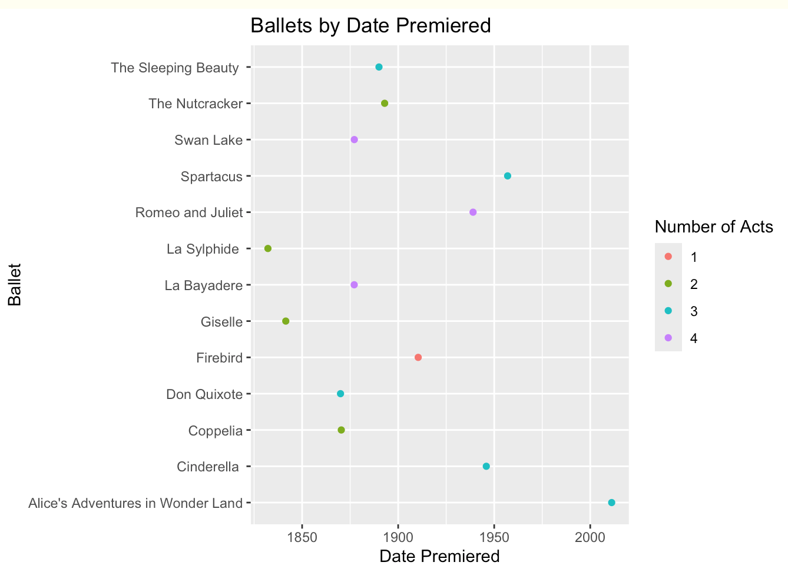

Show code
base::library(dplyr)
base::library(lubridate)
base::library(purrr)
base::library(gt)
base::library(ggplot2)Warning: package 'ggplot2' was built under R version 4.3.2Show code
base::library(plotly)This post composes a short data set of 13 ballets, and then creates a table with clickable links, and an interactive graph with plotly.

0. IntroductionBallet has been a popular form of dance and culture since the fifteen hundreds1. It has changed and evolved a lot since then, but for this analysis I thought it would be fun to investigate some of the most popular ballets.
I will use the following packages:
dplyr to manipulate the data.
lubridate to convert the date character in a date variable.
purr to use map function for links.
gt to make the table.
ggplot2 to make the graph.
plotly to make the graph interactive.
base::library(dplyr)
base::library(lubridate)
base::library(purrr)
base::library(gt)
base::library(ggplot2)Warning: package 'ggplot2' was built under R version 4.3.2base::library(plotly)To build this data from scratch, I started with 13 different popular ballets.
Ballet <- c("Swan Lake",
"The Nutcracker",
"Giselle",
"Romeo and Juliet",
"Don Quixote",
"Cinderella ",
"La Bayadere",
"Coppelia",
"The Sleeping Beauty ",
"La Sylphide ",
"Spartacus",
"Alice's Adventures in Wonder Land",
"Firebird")Using Wikipedia I am including:
Composer <- c("Pyotr Ilyich Tchaikovsky",
"Pyotr Ilyich Tchaikovsky",
"Adolph Adam",
"Sergei Prokofiev",
"Ludwig Minkus",
"Sergei Prokofiev",
"Ludwig Minkus",
"Leo Delibes",
"Pyotr Ilyich Tchaikovsky",
"Filippo Talioni",
"Leonid Yakobson",
"Joby Talbo",
"Igor Stravinsky ")Note ballets with only one choreographer will show the second choreographer as blank.
choreographer_1 <- c("Julius Reisinger",
"Marius Petipa",
"Jean Coralli",
"Ivo Vana-Psota",
"Marius Petipa",
"Rosstislav Zakharov",
"Marius Petipa",
"Arthur Saint-Leon",
"Marius Petipa",
"Jean-Madeline Schnitzhoeffer",
"Aram Khachaturian",
"Christopoher Wheeldon",
"Michel Fokine")
choreographer_2 <- c("",
"Lev Ivanov",
"Jules Perrot",
"",
"",
"",
"",
"",
"",
"",
"",
"",
"")Acts <- c(4, 2, 2, 4, 3, 3, 4, 2, 3, 2, 3, 3, 1)month_premiered <- c( 3, 12, 6, 12, 12, 11, 2, 5, 1, 3, 12, 2, 6)
day_premiered <- c( 4, 18, 28, 30, 26, 21, 11, 25, 5, 12, 27, 28, 9)
year_premiered <- c(1877, 1892, 1841, 1938, 1869, 1945, 1877, 1870, 1890, 1832, 1956, 2011, 1910)Links <- c("https://www.youtube.com/watch?v=LbUatYSm8ME",
"https://www.youtube.com/watch?v=tR_Z1LUDQuQ",
"https://www.youtube.com/watch?v=VroMXEDLTq8",
"https://www.youtube.com/watch?v=7AnpPu7j6Dg",
"https://www.youtube.com/watch?v=pazAS4cNi7w",
"https://www.youtube.com/watch?v=LPbKZXNfJ-Y",
"https://www.youtube.com/watch?v=zTR4Oco_0Bc",
"https://www.youtube.com/watch?v=uE2fjFMag7E",
"https://www.youtube.com/watch?v=EDFlRq5RnbQ",
"https://www.youtube.com/watch?v=R_RFxSLar2A",
"https://www.youtube.com/watch?v=Fha6rYtaLMk",
"https://www.youtube.com/watch?v=c2wWq25p5Sk",
"https://www.youtube.com/watch?v=Yo9L9H--t3k")For the ballet dataframe, ballet_df, I will use:
make_date() to make the character variables a date.
arrange() to arrange the df alphabetically by Ballet.
I also did not include choreographer_2, because it only provided two data points which did not contribute a lot to this short analysis.
ballet_df <- base::data.frame(
Ballet,
Composer,
choreographer_1,
Acts,
date_premiered = lubridate::make_date(year_premiered,
month_premiered,
day_premiered)) %>%
dplyr::arrange(Ballet)1. CodeTo add the hyper-linked text I used:
mutate() to overwrite exsiting variables.
map() to transform the input into an object of the same length.
a() to create an R object that represents an HTML hyperlink tag.
.x stands for the vector that is being input.
html() so the HTML tag will come through as HTML when rendered.
as.character() to convert the input to a character.
To create the table I used:
gt() to create the table.ballet_table <- ballet_df %>%
dplyr::mutate(
Links = map(Links, ~ htmltools::a(href = .x, "Youtube")),
Links = map(Links, ~ gt::html(as.character(.x)))) %>%
gt::gt()To create a ggplot I used:
ggplot() to create the plot, and define the mapping.
geom_point() to create a scatterplot.
labs() to define the labels.
ggtitle to define the title.
ballet_plot <- ballet_df %>%
ggplot2::ggplot(mapping = aes(x = date_premiered,
y = Ballet,
color = factor(Acts))) +
ggplot2::geom_point() +
ggplot2::labs(x = "Date Premiered",
y = "Ballet",
color = "Number of Acts") +
ggplot2::ggtitle("Ballets by Date Premiered")2. Visuals| Ballet | Composer | choreographer_1 | Acts | date_premiered | Links |
|---|---|---|---|---|---|
| Alice's Adventures in Wonder Land | Joby Talbo | Christopoher Wheeldon | 3 | 2011-02-28 | Youtube |
| Cinderella | Sergei Prokofiev | Rosstislav Zakharov | 3 | 1945-11-21 | Youtube |
| Coppelia | Leo Delibes | Arthur Saint-Leon | 2 | 1870-05-25 | Youtube |
| Don Quixote | Ludwig Minkus | Marius Petipa | 3 | 1869-12-26 | Youtube |
| Firebird | Igor Stravinsky | Michel Fokine | 1 | 1910-06-09 | Youtube |
| Giselle | Adolph Adam | Jean Coralli | 2 | 1841-06-28 | Youtube |
| La Bayadere | Ludwig Minkus | Marius Petipa | 4 | 1877-02-11 | Youtube |
| La Sylphide | Filippo Talioni | Jean-Madeline Schnitzhoeffer | 2 | 1832-03-12 | Youtube |
| Romeo and Juliet | Sergei Prokofiev | Ivo Vana-Psota | 4 | 1938-12-30 | Youtube |
| Spartacus | Leonid Yakobson | Aram Khachaturian | 3 | 1956-12-27 | Youtube |
| Swan Lake | Pyotr Ilyich Tchaikovsky | Julius Reisinger | 4 | 1877-03-04 | Youtube |
| The Nutcracker | Pyotr Ilyich Tchaikovsky | Marius Petipa | 2 | 1892-12-18 | Youtube |
| The Sleeping Beauty | Pyotr Ilyich Tchaikovsky | Marius Petipa | 3 | 1890-01-05 | Youtube |